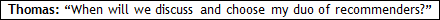

Sure.
Let’s check the doubts that our Heroes had last year. Most probably their doubts are on your mind, or should be.
Great.

The letter of recommendation reinforces what you have sold in your essays and interviews. It is not worth spending time in such choice now, since you are still deciding what you will sell. Ideally, the discussion on recommendation letters should happen once you are done with the The Big Synthesis Exercise (Note: We will expand on Recommendations Letters later on – Km 28.)
I’ve heard some Schools demand that one of the recommendations come from your current direct supervisor. To consultants (my case), does that mean that the recommender should be the manager of my current assignment or can I ask my manager for a former project?
In general, we recommend that the applicant ask his/her immediate supervisor for a letter. Some schools suggest (and we reinforce that) that in case that is not possible, the applicant use the “additional information” space provided on the data form or the optional essay to explain the reasons. The atypical dynamics of consulting projects somehow affects the concept of direct supervisor. Some schools make such request because they expect an immediate superior to be more prepared to reveal the values of the applicant. That is all. If you have been in a rather “unattractive” assignment in the past three months, don’t bother to pick a recommender from this specific project just because it is the most recent. If the assignment that best shows your skills and that highlights your “brand” ended in APRIL, ask the letter to the Associate/Manager/Partner with whom you worked in this project. Thus, you can choose a boss from an older assignment.
So, if I’ve understood, the criterion is quite simple: two letters that bring more insights into my candidacy values.
Yeah. And I should also remind you that the Admissions Committee (AdCom) might find strange that an analyst in his twenties is not being recommended by someone who has worked in a recent engagement (that is, this year). After all, in 2.5 years of experience, the most interesting projects should be, a priori, the most recent, right?
In a way, yes, Megaron, but I’m not that sure. Of course, I have another three months of work until I submit my application. I am in the middle of an assignment that can ‘yield’ a good letter.
Think carefully. We’ll talk about this later, ok?
Noted. I have a doubt, now. What happens to the applicants who cannot disclose their MBA plans to their bosses? You know, my girlfriend is also applying. Unlike consulting firms, most companies do not regard the MBA as a common practice. She feels a bit insecure about her managers’ reaction to this news. The situation is aggravated because she has just taken over a new department. What is the best approach to the subject?
Firstly, it is possible to apply without a letter from an immediate supervisor. Although that is not ideal, the Admission Committee members are sensitive to this kind of issue. Naturally, in this case, she should use your optional essay to explain why she cannot request a letter from someone who knows her so well. If she plans to request her immediate superior for a letter, do so from July onwards. At the moment, his awareness of her MBA plans would not actually help in anything; besides, if he is likely to get in the way of her process, he should definitely keep it to himself, at least for the time being. (Note: We will expand on Recommendations Letters later on).
After all, Megaron, what is the relevance of recommendation letters to the process?
They are an important element in your application process. Good recommendations support and emphasize your application: they offer particular details on your work experience and success. They even fill in gaps or lessen weak points in your essays. Bad recommendations, on the other hand, may destroy the image you have devoted deeply to convey throughout your essays. Business schools request recommendation letters in order to check whether the information you provide in your essays and résumé is accurate. The admission committee may also seek information you may have (perhaps deliberately) omitted in your writing.
When the candidate has an outstanding reference letter?
We have a good recommendation letter when we see the alignment between your “marketing positioning” and what recommender writes about your values.
Do you think it is reasonable to ask your recommender to write 4-6 different letters? I, and specially my boss, thought it would be a generic letter. Oh come on, nobody would bother doing that thing. I will have to write by myself - is it what they are waiting for?
Yeah I know it is an unrealistic demand. But you should try to find someone who will take the time to answer meaningfully all the questions.
Do you know which schools (Berkeley Haas/Kellogg/Michigan Ross/MIT Sloan) will pay attention to the recommender’s position?
There is no such a thing. All schools will give the same ‘weight’ to the recommenders’ positions.
It does not make sense to talk about “average.” In this process, generic answers, which suit all applicants, are not that valuable. I need to understand each applicant and his or her post-MBA plan. Understanding what you want from the program, I can advise on the number of schools to which you should apply.
Last year I met a guy who applied to 9 schools.
I do not know him, but I suspect he was somewhat lost, huh? After all, if he was really willing to go to any of the 9 schools, he had probably not built a post-MBA plan. I wonder if 9 different schools would meet his needs.
I don’t believe he had any plans. (Laughing)
Unfortunately, many applicants believe that it is fine as long as the school is among the TOP 10. “After all, how different can they be? They’re all the same, right?” We will explore this misconception later on when we talk about WHY School X Exercise.
Megaron, I don't consider myself an outstanding applicant, but most of my current colleagues and ex-bosses (plenty of them are MBAs) see me as a stellar candidate. They say it is nonsense to attend any other program except Harvard or Stanford. Do you think it is insane to apply just to HBS and Stanford?
Didactically we could evaluate applicants' features under academics, professional, and personal criteria. If you are over qualified in all three components to HBS or Stanford - no, I do not consider it "insane apply just to HBS and Stanford". In addition, I can observe that in my career as an application advisor I have seen very few candidates with such profile. I think that, in general terms, when applicants do their homework, very few schools will attend their ambitions; I do not know if there is a candidate who will be satisfied only by Harvard and Stanford.
Rankings must be seen as a guide – an efficient tool, but they present distortions. The question is: “To which extent can an MBA applicant despise them? He should not. After all, the job market itself often relies on them. We must understand the methodology used by each ranking:
Bloomberg/BW: highlights the “client” (students and recruiters);
Financial Times: focuses on a more international view of the schools, since it is not limited to American schools; its criteria are similar to those of US News;
Forbes: ranks return on investment of MBA programs;
The Economist: takes a global perspective on business school education;
US News: focuses on the ‘seller’, which in that case is the school (academic reputation, admission criteria, faculty, facilities, etc.)
Financial Times: focuses on a more international view of the schools, since it is not limited to American schools; its criteria are similar to those of US News;
Forbes: ranks return on investment of MBA programs;
The Economist: takes a global perspective on business school education;
US News: focuses on the ‘seller’, which in that case is the school (academic reputation, admission criteria, faculty, facilities, etc.)